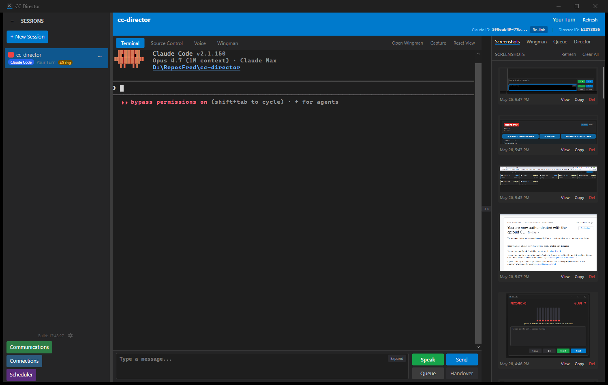
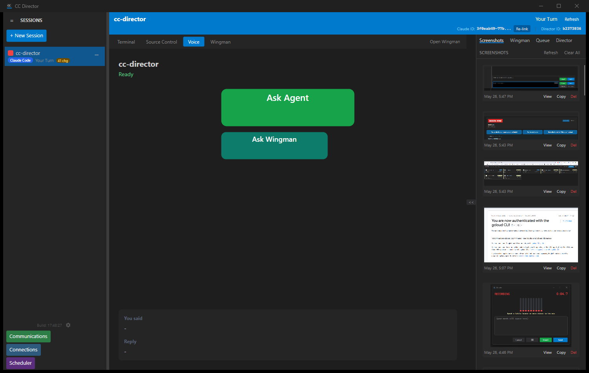
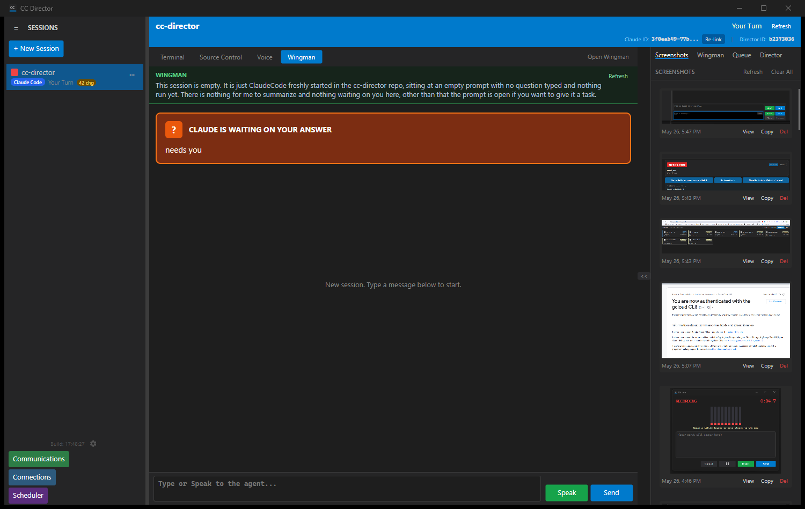
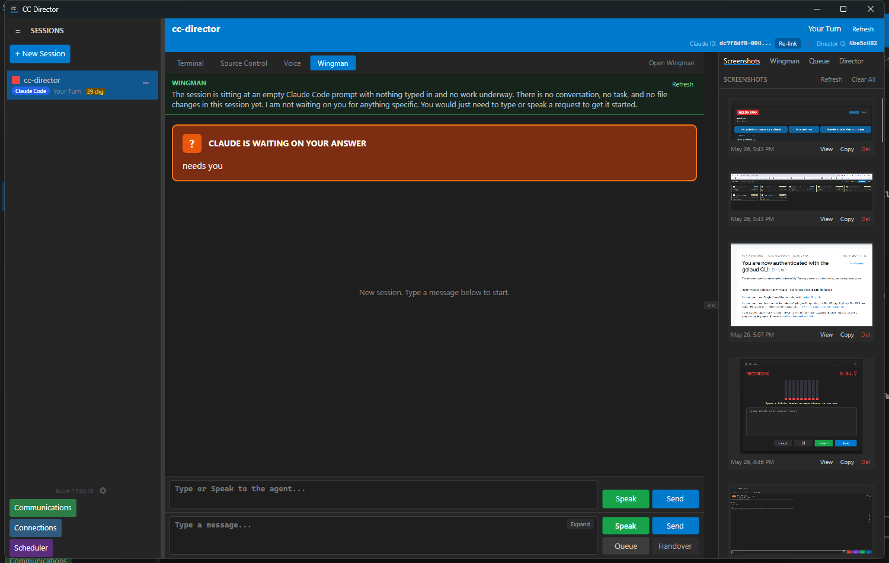
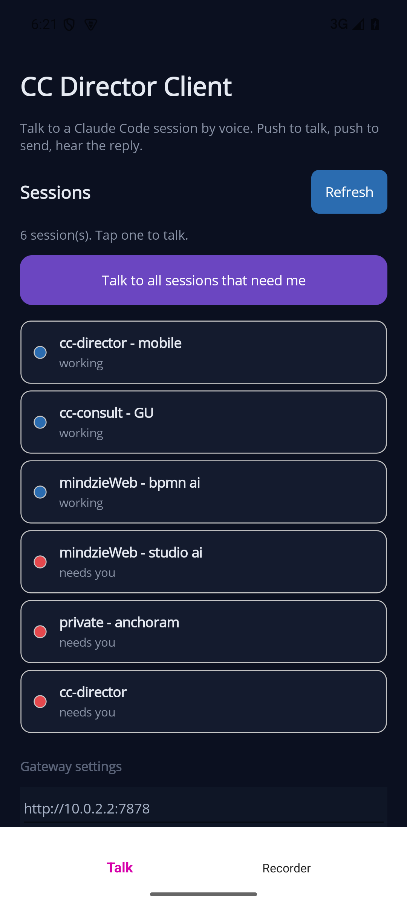
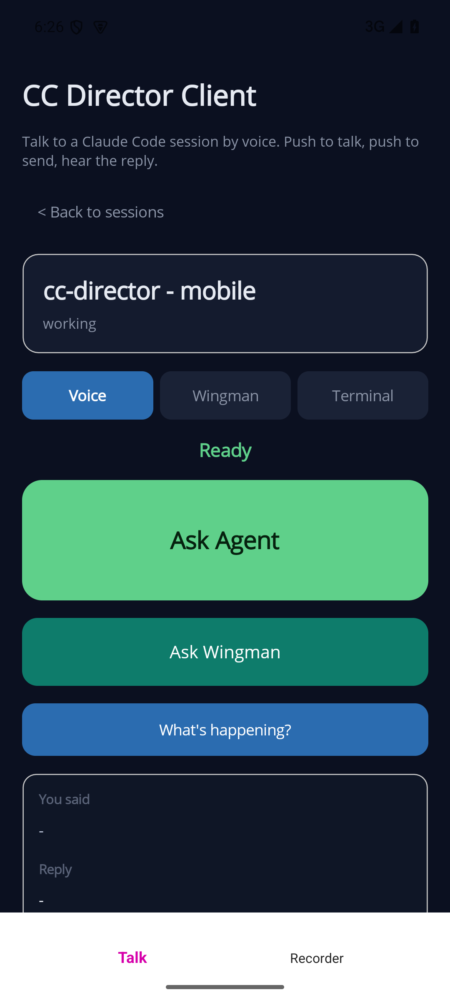
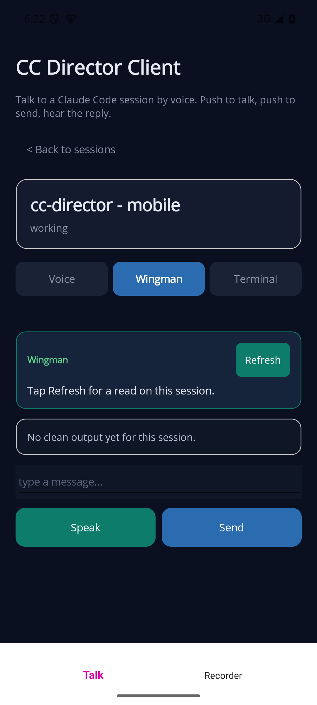
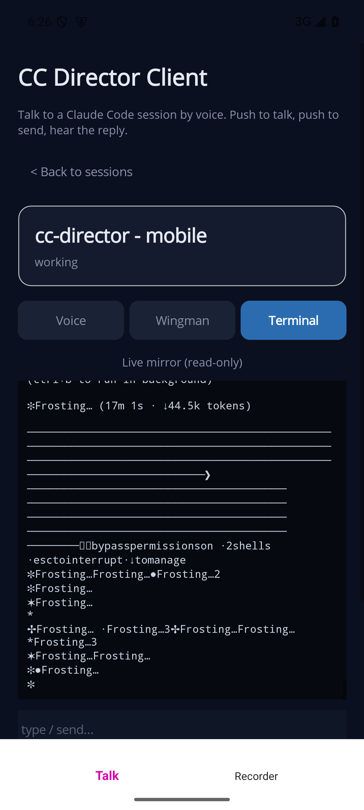

| Tab / item | Result | Notes |
|---|---|---|
| Terminal tab | PASS | Live Claude Code renders in the real ConPTY terminal (unchanged behavior). Prompt bar present. The scheduled-task launch kept the grandchild claude alive. |
| Voice tab | PASS | "Ask Agent" (larger, green) above a smaller "Ask Wingman" (teal); status line + "You said"/"Reply" panels. Both are push-to-talk; Ask Agent speaks the agent reply, Ask Wingman speaks the read-only answer. |
| Wingman tab | PASS | Generated a real plain-language wingman annotation over the live session ("This session is empty... nothing waiting on you here..."), clean output area, and a single Speak/Send-to-agent bar (text replies). |
| Bug: duplicate input bar | FOUND & FIXED | The shared Terminal prompt bar was also showing on the Voice and Wingman tabs - a duplicate input bar on Wingman. Fixed in SwitchLeftTab (hide PromptBarBorder on Voice/Wingman). Verified in the after shots below. |
| Backend: voice cleanup port (Phase 0) | PASS | Voice path now uses the shared verbatim/dictionary-only CleanupOrchestrator. Covered by 117 passing Core unit tests (not a UI screenshot). |
| Phone (MAUI) - all three tabs | PASS (emulator) | Built, installed, and run on the cc_rec_test Android emulator. Roster loaded 6 live sessions from the Gateway; the in-session Voice / Wingman / Terminal switcher and all three tab layouts render. Screenshots below. |
| Phone bug: Voice button label | FOUND & FIXED | The big Voice button showed "Talk" instead of "Ask Agent" - the XAML was renamed but SetTalkButton reset the idle text to "Talk". Fixed; now reads "Ask Agent". |
| Phone bug: terminal mirror unreadable | FOUND & FIXED | The Terminal mirror polled raw=true and showed raw ANSI escape codes (unreadable). Switched to a cleaned snapshot (raw=false, last 300 lines, replace each poll) - now readable. (VT-grade rendering remains a separate xterm.js follow-up.) |
http://10.0.2.2:7878) and temporarily enabled Android cleartext traffic for the test (reverted afterward - production uses HTTPS/tailnet). Per-session data over the tailnet endpoints is therefore empty on the emulator (e.g. "No clean output yet"), but every tab layout renders. The real end-to-end data path is proven on the desktop above (same backend) and on Soren's tailnet-connected phone.








cc-director-avalonia4.exe) and its test session are left running; safe to close. Nothing was committed. The screen was locked partway through, so the live screenshots were captured with PrintWindow (which renders the window into memory and works regardless of lock/occlusion) rather than a screen grab.